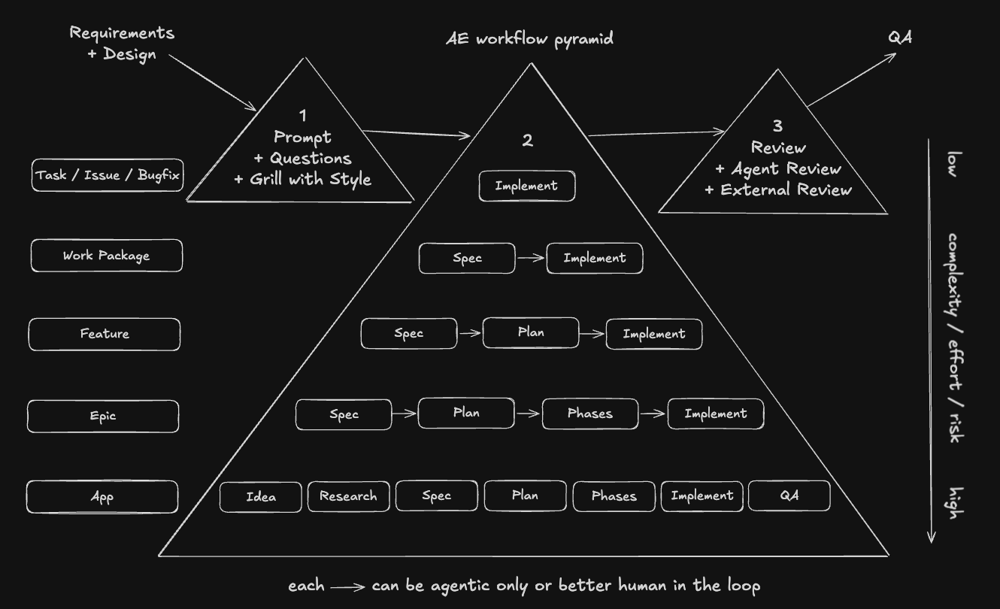

Skills give an agent repeatable capabilities. Workflows decide how much structure a task needs before the agent starts editing. In this lab you'll practice three levels: a tiny task, a feature, and a bonus app built from scratch.
This is Lab 03. You already chose a project in Lab 00, prepared it for agentic engineering in Lab 01, and tried skills in Lab 02. Now you decide how much process each request deserves.
The rule is simple: every workflow starts with Prompt and optionally grilling and ends with Review including commit. The middle grows with scope. A bugfix can go straight to implementation; a feature needs a spec and a plan; a new app needs idea shaping, research, phases, and QA.
Most bad agent output starts before implementation. The task was too vague, the workflow was too thin, or the human skipped the review boundary. Choosing the right workflow keeps speed without giving up control.

| Level | Workflow |
|---|---|
| Task / issue / bugfix | Prompt and optionally grilling → Implement → Review including commit |
| Work package | Prompt and optionally grilling → Spec → Implement → Review including commit |
| Feature | Prompt and optionally grilling → Spec → Plan → Implement → Review including commit |
| Epic | Prompt and optionally grilling → Spec → Plan → Phases → Implement → Review including commits |
| App | Prompt and optionally grilling → Idea → Research → Spec → Plan → Phases → Implement → QA → Review including commits |
Use the project you chose in Lab 00 for the required assignments. Fall back to this repository only when you do not have a suitable task or feature in your own project.
Goal: complete one tiny task with the shortest safe workflow.
Pick a task, issue, or bugfix from your Lab 00 project. It should be small enough that a spec would feel like paperwork: a typo, a small style fix, a broken test, a missing aria label, or a tiny docs correction.
promptUse the top workflow: prompt and optionally grilling, implement,
then review including commit.
In my Lab 00 project, fix the missing accessible label on the icon-only
settings button. First inspect the component and ask me if anything is unclear.
If it is straightforward, implement the smallest safe change and show me the diff.
If you need a fallback in this repo, use a tiny documentation wording fix instead of source-code work.
Checkpoint: one tiny change is reviewed by you, the relevant check passed, and you made the commit.
Goal: complete one feature with a spec and plan before implementation.
Pick a small feature in your Lab 00 project. It should be user-visible and concrete, but not large enough to need phases. Good candidates are a new filter, a simple settings panel, an empty state, or one well-bounded form improvement.
promptUse the feature workflow:
Prompt and optionally grilling -> Spec -> Plan -> Implement ->
Review including commit.
Feature: add an empty state to the project list when there are no projects.
Start by grilling the behavior and edge cases. Do not implement yet.
promptNow write the short spec and then a concrete implementation plan.
Keep it scoped to this feature. Wait for my approval before editing files.
promptI approve the plan. Implement it in small diffs, run the relevant
checks, and summarize what I need to review before I commit.
A feature has enough moving parts that implementation order matters. The plan is where you catch missing states, unclear ownership, and test gaps before the diff exists.
Checkpoint: the feature has a spec, an approved plan, reviewed implementation, passing checks, and a user-made commit.
Goal: create a new app from scratch with the full app workflow.
This is intentionally bigger than the required assignments. Start outside this repository, in a new sibling workspace or scratch directory. The point is not to finish a production app; it is to feel why app-sized work needs idea shaping, research, phases, QA, and multiple review commits.
promptUse the app workflow:
Prompt and optionally grilling -> Idea -> Research -> Spec -> Plan ->
Phases -> Implement -> QA -> Review including commits.
I want to create a tiny Angular app for tracking conference talk ideas.
Start by grilling the idea and reducing scope until it can be built in a few
small phases. Do not scaffold yet.
Checkpoint: you have a small new app with a spec, phase plan, QA notes, and reviewed commits per phase.